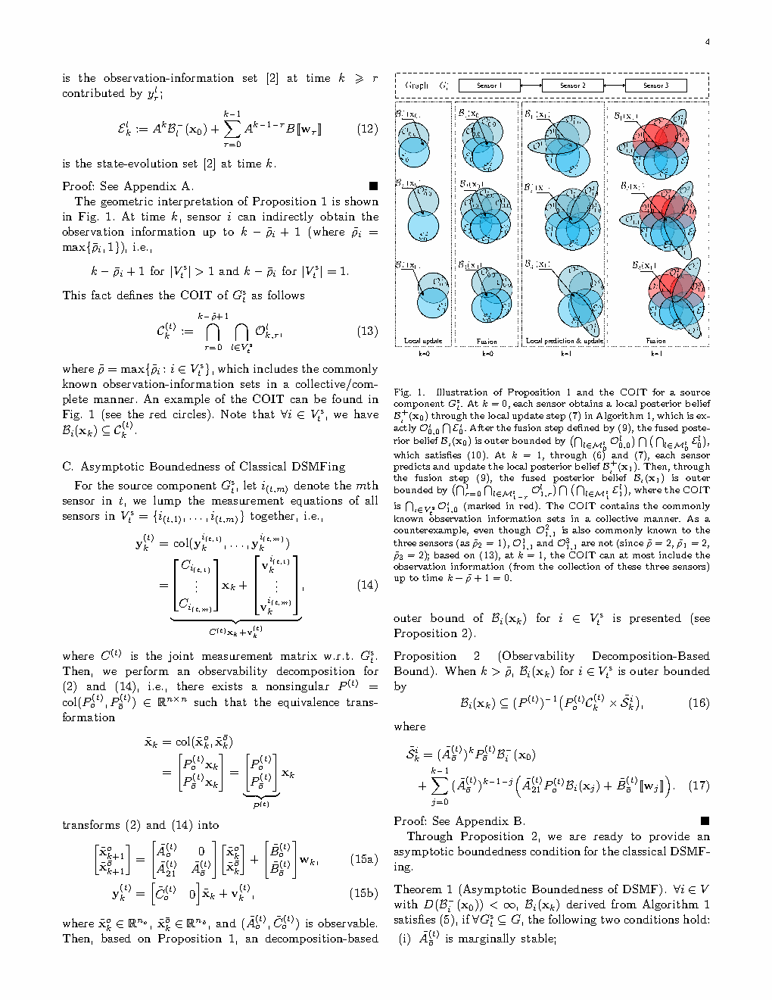
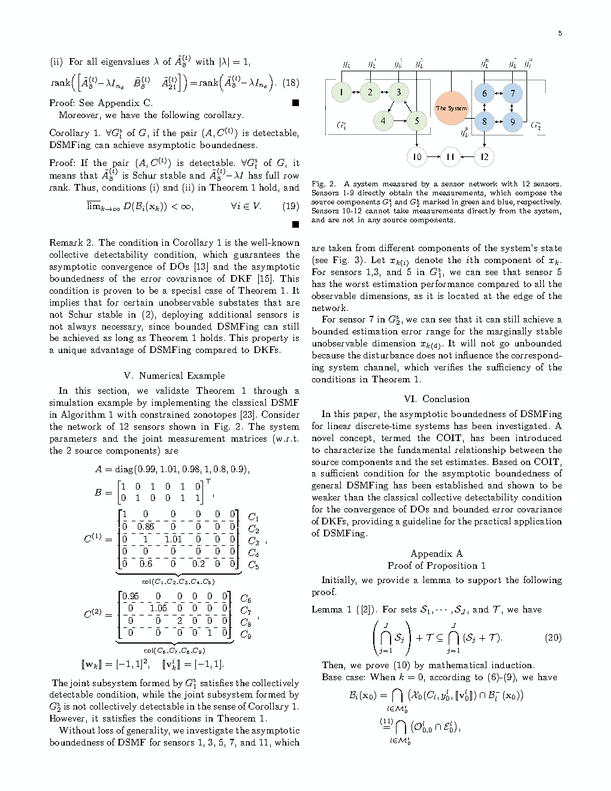
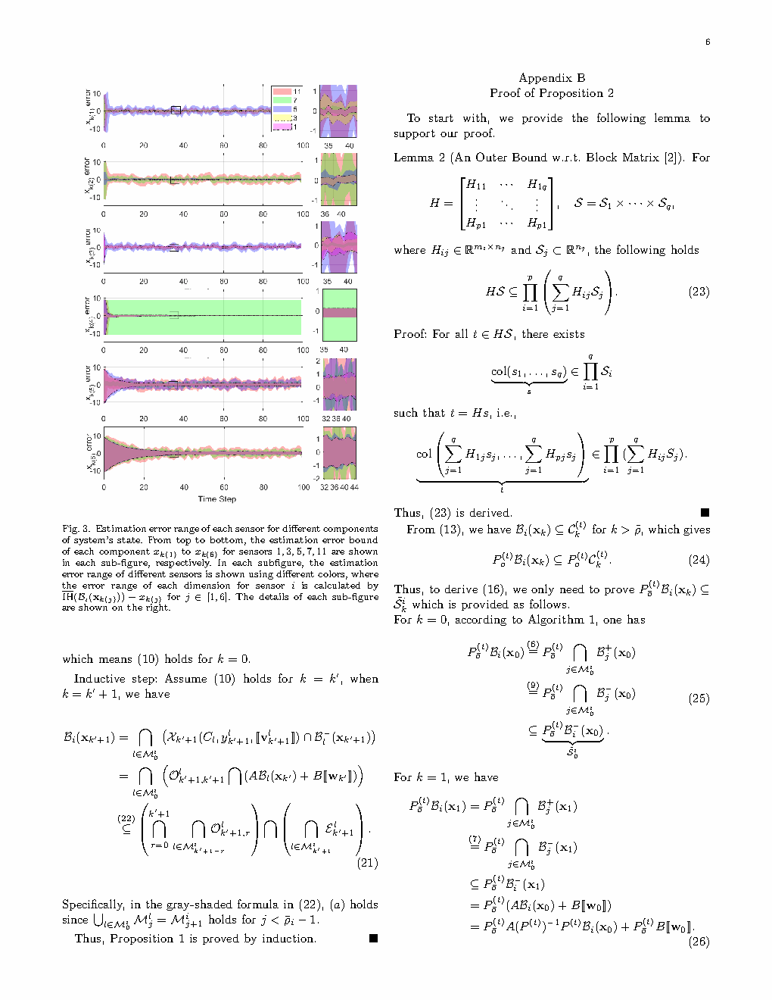

| Title | Asymptotic Boundedness of Distributed Set-Membership Filtering（分布式集合成员滤波的渐近有界性） |
| Authors | Yudong Li1, Yirui Cong2 (corresponding), Shimin Wang1, Martin Guay3, Jiuxiang Dong1 |
| Affiliation | 1. 东北大学 流程工业综合自动化国家重点实验室；2. 国防科技大学 智能科学学院；3. 女王大学 (加拿大) 化学工程系 |
| Venue | IEEE Transactions on Automatic Control, early access May 2026. arXiv:2509.14106, Sept 2025. 8 pages. |
| DOI / Links | arXiv:2509.14106 | IEEE Xplore |
| TL;DR | 首次研究线性离散时间分布式集合成员滤波（DSMFing）的渐近有界性。提出全新概念 COIT（Collective Observation-Information Tower，集体观测信息塔）来刻画图结构（源组件）与估计集合之间的本质关系。基于 COIT 建立了一个易于验证的充分条件（Theorem 1），确保 DSMF 估计集渐近有界。惊人发现：该充分条件推广了经典 collective detectability 条件——DSMF 可以容忍某些分布式 Kalman 滤波无法忍受的不稳定不可观模态（因为 DSMF 的集合约束可以沿图传播来抑制发散方向，而 DKF 的协方差无法类似地"自我修复"）。 |
| Inspiration Source | What Insight It Inspired | Type |
|---|---|---|
| Distributed Observers (DOs) 的 collective detectability | DO 的收敛性需要 collective detectability——每个不可观方向必须至少被一个传感器测量。但 DSMF 是集合而非点估计，信息约束的传播方式不同（取交集累积 vs 线性组合更新） | 类比 |
| 图论中的 source component（源组件） | 源组件是没有入边的强连通分量——它们是信息在网络中传播的"起点"。如果源组件中的观测信息不足以约束某个状态方向，下游节点再多的信息也无法补救，因为下游节点从源组件获得的信息本身就是不完整的 | 图论工具 |
| Observability decomposition（可观性分解） | 将系统矩阵 A 按可观性分解为可观和不可观子系统。不可观子系统的模态如果是不稳定的（特征值在单位圆外），且扰动能通过输入矩阵馈入这些模态，则估计集会发散——除非 DSMF 的交集操作能阻断这种发散 | 系统理论 |
| Wrapping effect 在区间分析中的研究 | wrapping effect 是集合方法的核心困难——每次降阶都在"包裹"真实集合时引入额外范围。DSMF 中这个效应可能叠加使集合膨胀 → 需要理论判断何时能保持有界 | 计算挑战 |
flowchart TB
subgraph INPUT["输入: 系统 + 网络"]
SYS["系统: x_{k+1} = A x_k + w_k
观测: y_{i,k} = C_i x_k + v_{i,k}"]
GRAPH["通信图: G = (V, E)
每个节点 i 有邻居 N_i"]
end
subgraph DECOMP["分解: 图 + 系统"]
SCC["图分解: 找出所有 source components G_t^s"]
OBS["系统分解: 对每个源组件做可观性分解 (A, C^{(t)})"]
end
subgraph COIT["COIT: 集体观测信息塔"]
DEF["定义: 对每个源组件构建观测信息集 O_{k,r}^l
和状态演化集 E_k^l"]
OUTER["外近似: 每个传感器的信念 B_i(x_k) ⊆ ∩(O ∩ E)"]
ACCUM["累积: 沿时间轴堆积约束层, 分析约束能力的增长"]
end
subgraph VERDICT["判据: Theorem 1"]
COND1["条件(i): Ã_ō^{(t)} 边沿稳定"]
COND2["条件(ii): 对 |λ|=1, rank(Ã_ō^{(t)} - λI) = full"]
RESULT["结论: 若(i)(ii)满足, DSMF 估计集渐近有界"]
end
INPUT --> DECOMP --> COIT --> VERDICT
classDef input fill:#fef7ed,stroke:#f59e0b,stroke-width:2px,color:#92400e
classDef decomp fill:#e8f0fe,stroke:#3b82f6,stroke-width:2px,color:#1d4ed8
classDef coit fill:#f0ebfd,stroke:#8b5cf6,stroke-width:2px,color:#6d28d9
classDef verdict fill:#e6f7ee,stroke:#10b981,stroke-width:2px,color:#047857
class SYS,GRAPH input
class SCC,OBS decomp
class DEF,OUTER,ACCUM coit
class COND1,COND2,RESULT verdict
flowchart LR
subgraph DO["Distributed Observer"]
DO_COND["Collective Detectability
(A, C^{(t)}) 可检测"]
end
subgraph DKF["Distributed Kalman Filter"]
DKF_COND["= DO 条件
(协方差有界 ⇔ 系统可检测)"]
end
subgraph DSMF["Distributed Set-Membership Filter"]
DSMF_COND["Theorem 1 条件
(比 collective detectability 更弱)"]
end
DO_COND -.->|"等价"| DKF_COND
DO_COND -->|"推广 (严格更弱)"| DSMF_COND
DKF_COND -->|"推广 (严格更弱)"| DSMF_COND
classDef do fill:#e8f0fe,stroke:#3b82f6,stroke-width:2px,color:#1d4ed8
classDef dkf fill:#fef7ed,stroke:#f59e0b,stroke-width:2px,color:#92400e
classDef dsmf fill:#e6f7ee,stroke:#10b981,stroke-width:2px,color:#047857
class DO_COND do
class DKF_COND dkf
class DSMF_COND dsmf
| 类别 | 内容 | 维度 |
|---|---|---|
| 输入 | (1) 系统矩阵 $A$ 和传感器矩阵 $\{C_i\}_{i=1}^N$；(2) 通信图 $G=(V,E)$；(3) 噪声界 $\mathcal{W}, \mathcal{V}_i$ | 系统模型 + 网络拓扑 |
| 输出 | 判定：DSMF 估计集是否为渐近有界（Theorem 1 的充分条件是否满足） | 是/否 (及分析) |
| 目标 | 建立首个 DSMF 渐近有界性的理论框架，将 DSMF 的有界性条件与经典的 collective detectability 统一并推广 | 理论贡献 |
这是一个理论分析工作——不提出新的滤波算法，而是为已有的 DSMF 算法提供性能保证的理论判据。类比：如果说 DSMF 算法是"一台机器"，本文回答的是"这台机器在什么条件下不会失控"——即估计集不会随时间无限扩大。场景：在部署分布式集合成员滤波器之前（如在多 UAV 编队中），需要先用本文的条件判断网络拓扑和传感器配置是否能保证有界估计。
| Prior Method | Core Idea | Why It Fails for DSMF |
|---|---|---|
| Distributed Observer (DO) convergence analysis | 用 collective detectability 条件 + Lyapunov 函数证明估计误差 → 0 | DO 分析的是点估计误差的收敛（向量范数 → 0），而 DSMF 需要分析的是集合直径的有界性。Lyapunov 方法不能直接用于集合。 |
| Distributed Kalman Filter (DKF) boundedness analysis | 用 collective detectability 条件 + Riccati 方程证明协方差矩阵有界 | DKF 的协方差矩阵传播是矩阵代数（Riccati 递推），DSMF 的集合传播是集合代数（Minkowski 和、交集）。两者数学结构完全不同——不能简单对应。 |
| Centralized SMF boundedness analysis | 对集中式 SMF，分析估计集在可观条件下的有界性 | 集中式分析假设所有观测同时可用——不考虑网络通信的延迟和分布性。分布式场景中，信息需要沿图传播，可能某些方向的信息永远到达不了某些节点。 |
| Interval analysis wrapping effect theory | 分析区间运算中 wrapping effect 的增长速率 | 仅适用于区间表示（轴对齐盒子），不适用于 zonotope 或多面体表示。而且不涉及网络分布式场景中的交集操作。 |
本文不是算法论文而是理论分析论文。核心方法是 COIT 的构造与分析，其中最关键的数学步骤是将 DSMF 的递推方程转化为可以用 COIT 分析的形式。
LaTeX rendered by MathJax. ⚠ 符号解释请用中文。
| 参数 | 含义 | 为什么重要 |
|---|---|---|
| 源组件数量 $n_s$ | 通信图中 source component 的个数 | 每个源组件需要单独验证 Theorem 1——这是检查的"最小单元" |
| $\tilde{A}_{\bar{o}}^{(t)}$ 的谱半径 | 不可观子系统的最大特征值模 | >1 直接导致发散；≤1 则可能保持有界 |
| $C^{(t)}$ 的秩 | 源组件中堆叠观测矩阵的秩 | 决定可观子空间的维度——秩越大，可被观测约束的方向越多 |
| 图连通性指标 | 从源组件到每个节点是否存在路径 | 即使源组件满足条件，如果某个节点无法从该源组件获取信息（无路径），其估计集仍可能无界 |
| 噪声界 $\mathcal{W}, \mathcal{V}_i$ 的大小 | 扰动和观测噪声的有界范围 | 噪声界越大，估计集越膨胀——但通常不影响有界/无界的判定 |
理解本文需要掌握三个核心概念：有向图的源组件（为什么它是信息传播的起点）、可观性分解（如何分离可约束和不可约束的状态方向）、COIT 的信息累积机制（如何将分布式的多时刻观测信息整合为一个约束能力的量化分析）。
以三节点网络为例：节点 1 → 2 → 3。源组件 = {节点 1}（无入边）。节点 1 只能用自己的观测来估计状态。节点 2 可以使用节点 1 和节点 2 的观测。节点 3 可以使用全部三个节点的观测。关键在于：如果节点 1 自己的观测不足以约束某个状态方向（该方向在节点 1 处不可观），那么节点 1 的估计集在该方向会发散——这个发散会通过通信传给节点 2、再传给节点 3。即使节点 3 自己有该方向的观测，在 DSMF 的交集操作中，已经发散了的集合不会因为一个交集就"缩回去"——这就是为什么分析必须从源组件开始。
📷 论文原图截图。图片保存至 figures/ 子目录。

📷 请将截图保存为figures/fig1.png本图展示了：一个典型的分布式传感器网络，箭头表示通信/信息传播方向。被标记为红色的节点属于源组件——它们没有来自外部的入边。每个源组件内的传感器观测通过通信边向外传播（蓝色箭头），下游节点可以通过与邻居的信息交集来获取源组件中的观测约束。

📷 请将截图保存为figures/fig2.png本图展示了：COIT 的多层结构——底部（层 1）是最早到达源组件的观测信息，顶部（层 L）是当前时刻。每一层包含该时刻所有传感器的观测信息集 $\mathcal{O}$ 和从初始时刻到该层的状态演化约束 $\mathcal{E}$。随着层数增加，约束不断积累（取交集），塔的"孔径"逐渐收窄。

📷 请将截图保存为figures/fig3.png本图展示了：三个场景的估计集直径随时间的变化曲线。(a) 满足 Theorem 1 → DSMF 有界（曲线趋于水平）；(b) 不满足 Theorem 1 → DSMF 无界（曲线发散）；(c) 不满足 collective detectability 但满足 Theorem 1 → DSMF 有界但 DKF 发散——这是证明 Theorem 1 是真正推广的关键反例。
| 数据问题 | 潜在困难 | 严重程度 |
|---|---|---|
| 噪声界误估 | 如果 $\mathcal{W}$ 或 $\mathcal{V}_i$ 的真实范围大于定义值 → 部分噪声实现不被集合覆盖 → 真值可能落在估计集外 → "保证"失效。但通常不影响有界/无界的判定（除非噪声界被极度低估） | ★★★★ |
| 通信链路丢包 | 如果某条通信边间歇性失效 → 某些时刻节点的邻居集 $\mathcal{N}_i$ 变小 → 交集约束变弱 → 估计集膨胀。如果丢包时间占比过大，可能破坏有界性 | ★★★★★ |
| 传感器故障 | 传感器失效 = 该节点的观测信息丢失 → 源组件中缺失该传感器的约束 → 可能导致原来有界的系统变为无界 | ★★★★★ |
| 系统矩阵 A 的参数误差 | 如果真实的 A 与模型中的 A 有偏差 → 可观性分解不准确 → COIT 分析可能遗漏/误判某些方向的约束能力 | ★★★ |
| 参考文献 | 为什么重要 |
|---|---|
| Ugrinovskii (2011) — Distributed robust filtering with $H_\infty$ consensus. Automatica | 分布式鲁棒滤波的经典工作——集中式 $H_\infty$ 滤波的分布式推广。与 DSMF 一样不依赖噪声分布，但使用 $H_\infty$ 范数而非集合包含。理解这篇有助于对比两种非概率分布式滤波的优劣。 |
| Combastel (2015) — Merging Kalman filtering and zonotopic state bounding. Journal of Process Control | 系统论述了 zonotope 在状态估计中的应用——包括降阶策略和 wrapping effect 的处理。是 DSMF 算法实现的核心参考。 |
| Olfati-Saber (2007) — Distributed Kalman filtering for sensor networks. CDC | 分布式 Kalman 滤波的奠基性工作——定义了分布式估计中的信息融合协议。本文的 DSMF 通信协议在很大程度上继承了 DKF 的协议结构。 |
| Nair (2013) — A non-stochastic information theory. IEEE TAC | 与 Paper 1354 共享的理论基础——uncertain variable 理论。理解 UV 对于理解为什么 DSMF 的"交集"操作是比较不来的"加权平均"更自然的信息融合方式有帮助。 |